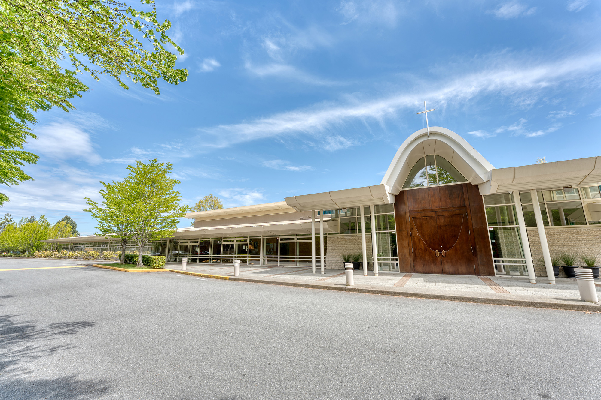

Our Parish | 我们的堂区
In 1990s, the population in Richmond increased dramatically and so did the number of Catholics. The three parishes in the city were not big enough to meet this growth. So in 1995, the Most Reverend Adam Exner OMI, Archbishop of Vancouver, bought the land in northern Richmond located in Granville Avenue and No. 2 Road which was previously the site of an old Baptist Church, and converted it to a new Catholic Church.
The new Parish was named "Canadian Martyrs Catholic Church" in order to commemorate the eight Jesuit martyrs from France in the 17th century. They were Father Jean De Brebeuf, Isaac Jogues, Antoine Daniel, Gabriel Lalemant, Charles Garnier and Noel Chabanel and two lay companions. In Canada, their feast day is celebrated on September 26.
The parish property is about 2.2 acres. The original facility was built in 1967. After interior and exterior renovations, adding more equipment and religious articles, there were 355 seats which was enough for 400 parishioners. In addition, there was the parish office, a conference room, kitchen, community room and some classrooms. It became a well equipped church that served the community well.
The parish population expanded rapidly and soon outgrew the original building. Plans were developed and funds were raised to build a larger church facility. On May 5, 2001 the last mass was celebrated in the old building. After that, everything had to be moved out and put into storage. The parish community spent the next 22 months worshipping at the nearby parishes of St. Joseph the Worker and St. Paul's.
The new 600 seat Church and adjacent Parish Centre were officially opened on March 2, 2003.
Canadian Martyrs Parish is located in the centre of the city. It is the only Catholic Church in Richmond where masses are offered in Mandarin, Cantonese and English. There are about 1200 registered families and the number is increasing.
在1990年代，列治文的人口迅速增长，天主教信友的人数也随之增加。市内原有的三个堂区已不足以应对这一增长。因此，在1995年，温哥华总教区总主教亚当・埃克斯纳总主教（献主会会士）购置了位于列治文北部Granville Avenue与2号路交界的一块土地，该地原为一座浸信会教堂旧址，随后被改建为一座新的天主堂。
新堂区被命名为“加拿大殉道圣人天主堂”，以纪念17世纪来自法国的八位耶稣会殉道圣人。他们是圣若望・德・布雷伯夫神父、圣依撒格・饶格、圣安多尼・达尼尔、圣加俾额尔・拉勒芒、圣查尔斯・加尔尼耶及圣诺厄尔・沙巴内，以及两位平信徒同伴。在加拿大，他们的瞻礼日为9月26日。
堂区占地约2.2英亩。原有建筑建于1967年。经过内外翻修，并增设各类设备及宗教用品后，教堂设有355个座位，可容纳约400位教友。此外，还设有堂区办公室、会议室、厨房、多功能活动室及数间教室，成为一座设备完善、服务社区的堂区。
随着堂区人数的迅速增长，原有建筑很快不敷使用。堂区遂筹划并募款兴建一座更大的教堂。2001年5月5日，旧堂区举行了最后一台弥撒。之后，所有物品被搬离并存放。接下来的22个月中，堂区团体在邻近的圣若瑟劳工堂及圣保禄堂举行礼仪。
可容纳600人的新教堂及相邻的堂区中心于2003年3月2日正式启用。
加拿大殉道圣人堂区位于市中心，是列治文唯一一所同时提供普通话、粤语及英语弥撒的天主堂。目前约有1200个注册家庭，且人数仍在持续增长。